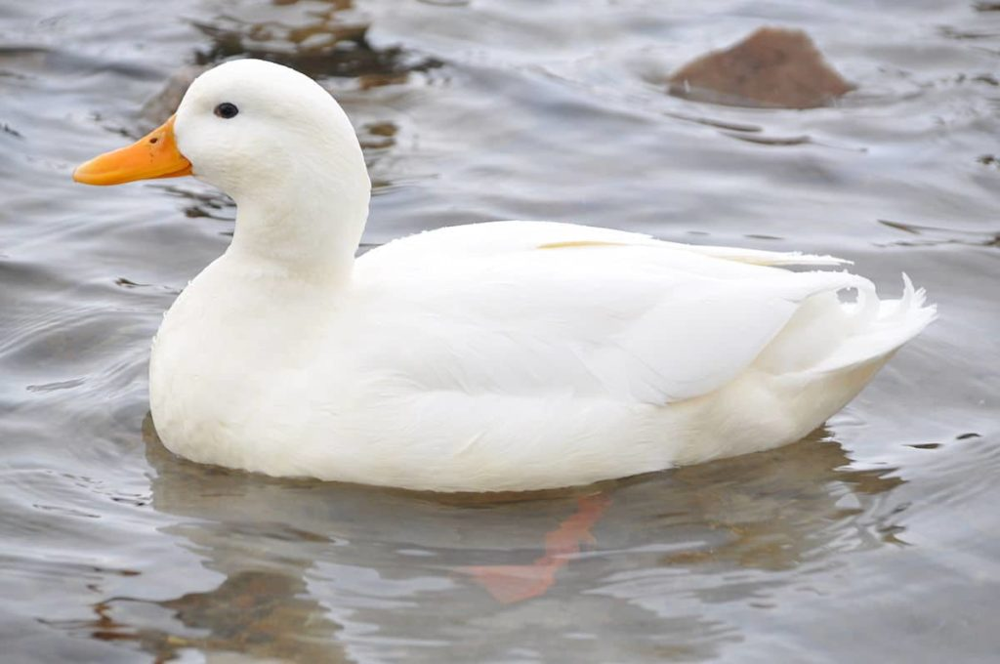

Pato es el nombre común para ciertas aves de la familia Anatidae, principalmente de la subfamilia Anatinae y dentro de ella del género Anas. No son un grupo monofilético, ya que no se incluyen los cisnes ni los gansos. La mayoría de las razas descienden del ánade real (Anas platyrhynchos), que fue domesticado en el sur de China. Son una fuente de alimentación particularmente importante en las zonas rurales de Asia, en especial en el Asia sudoriental.
